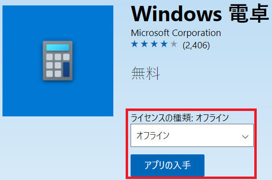
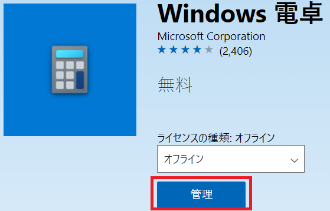
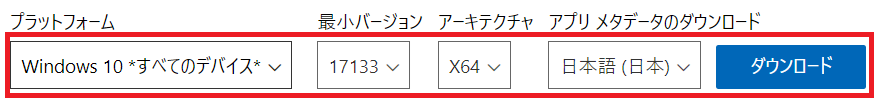
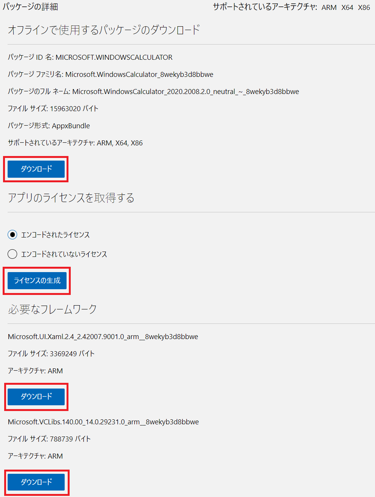

本記事は 2019 年 3 月 6 日に公開された オフラインパッケージの入手方法およびストアアプリのインストール手順について の最新版になります。
最新の更新情報は、本内容をご参照ください。
オフライン ライセンス アプリについて
こんにちは、Windows サポートチームの國重です。
今回は、Microsoft Store for Business、Microsoft Store for Education からオフライン ライセンス アプリをダウンロードする手順をご紹介いたします。
Microsoft Store for Business、Microsoft Store for Education ではプライベート ストアと呼ばれる組織専用のストア ページを作成することで、任意のアプリケーションを配布することが可能になります。
しかしながら、プライベート ストアを利用するためには、ユーザーが Microsoft Store に Azure Active Directory、Office 365 アカウントでサイン インする必要があるため、以下のような状況ではプライベート ストアによるアプリケーションが展開できません。
- ネットワークに接続されておらず、Microsoft Store サービスにアクセスできない。
- Azure Active Directory、Office 365 アカウントでログオンできない。
このようなシナリオでは、Microsoft Store for Business、Microsoft Store for Education からオフライン ライセンス アプリを取得することでアプリケーションの展開が可能になります。
オフライン ライセンス アプリの二次配布について
オフライン ライセンスは組織のネットワーク内でのみ配布が可能です。
こちらは ビジネスおよび教育機関向け Microsoft Store のアプリを入手する にも記載しています。
オフライン ライセンス アプリの公開可否について
オフライン ライセンス アプリは全アプリケーションで用意されているものではなく、アプリケーションの発行元にて公開可否の設定が可能となっております。
Microsoft Store 上でオフライン ライセンス アプリが公開されていないアプリケーションにつきましては、アプリケーションの発行元にお問い合わせいただきますようお願い申し上げます。
オフライン ライセンス アプリをダウンロードする方法
オフライン ライセンス アプリはグローバル管理者、または、購入者ロールが割り当てられたアカウントから取得が可能になります。
グローバル管理者アカウントの確認方法
- Azure Portal にアクセスし、サイン インします。
- [Azure Active Directory] – [ロールと管理者] – [グローバル管理者] をクリックします。
- グローバル管理者アカウントのアカウントが表示されます。
購入者ロールの割り当て方法
- Microsoft Store for Business、Microsoft Store for Education にアクセスし、グローバル管理者でサイン インします。
- [管理] タブをクリックします。
- [アクセス許可] を選択します。
- 組織内の Azure Active Directory、Office 365 アカウントを入力し、”購入者” にチェックを入れて [保存] ボタンをクリックします。
オフライン ライセンス アプリのダウンロード
- Microsoft Store for Business、Microsoft Store for Education にグローバル管理者、または購入者ロールが割り当てられたアカウントでサインインします。
- [管理] - [設定] - [ショッピング エクスペリエンス] から [オフラインアプリを表示する] を “オン” に設定します。
- 画面右上の検索ボックスに ダウンロードしたいストアアプリ名を入力し検索します。
- 検索結果から対象のアプリを選択します。
- [ライセンスの種類] を “オフライン” に変更し、[アプリを入手する] をクリックします。
(“オフライン” が表示されていないアプリケーションはオフライン ライセンス アプリが非公開となっております。 )

- 購入確認画面が表示された後、ボタンが [管理] に変わりますので、[管理] ボタンをクリックします。

- [オフラインで使用するパッケージのダウンロード] にてインストール対象の環境に合わせた設定を選択し、[ダウンロード] をクリックします。

- 「パッケージの詳細」以下にある“オフラインで使用するパッケージ”、“必要なフレームワーク” のダウンロード、ならびに “ライセンスの生成” を全て実施します。

オフライン ライセンス アプリのインストール
- インストールするアカウントでログオンします。
- Windows PowerShell を実行します。
- Add-AppxPackage コマンドレットを実行し、アプリケーションをインストールします。
1 | Add-AppxPackage -Path <パッケージ（.AppxBundle 形式）のファイルパス> ` |
<実行例>
1 | Add-AppxPackage -Path "C:\temp\Microsoft.WindowsCalculator_2020.2008.2.0_neutral___8wekyb3d8bbwe.AppxBundle" ` |